Manna Doctors Machines - FTC
A Manna Doctors Machines é uma equipe de FTC mentoreada pela Manna Roosters, criada para aproximar estudantes da robótica competitiva e dos valores da FIRST. A equipe trabalha com programação, mecânica, elétrica, estratégia e comunicação, desenvolvendo soluções criativas para os desafios de cada temporada.
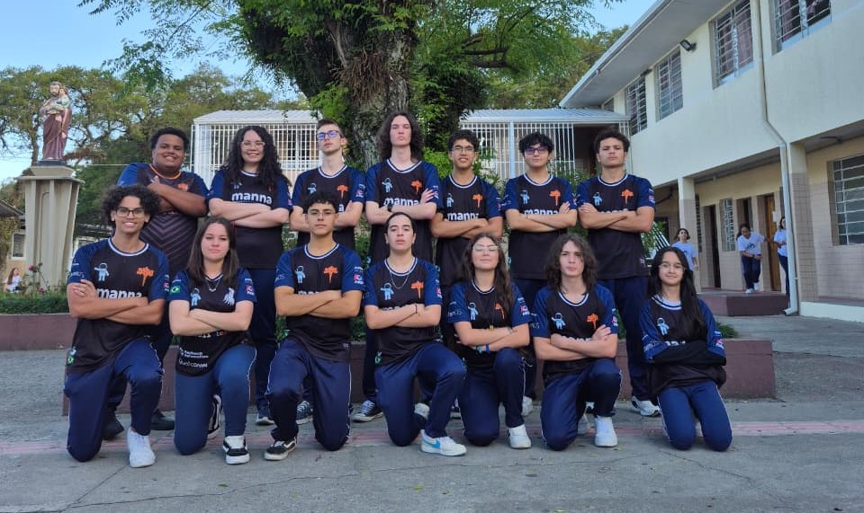
Durante a mentoria, os integrantes recebem apoio técnico e organizacional para aprender na prática a construir robôs, desenvolver projetos, documentar processos e trabalhar em equipe, fortalecendo sua autonomia dentro da comunidade STEAM. Em 2025, esse trabalho também trouxe reconhecimento à equipe, com a conquista do Prêmio de Motivação na Off Season das Araucárias e do Prêmio de Inovação no Regional FTC.
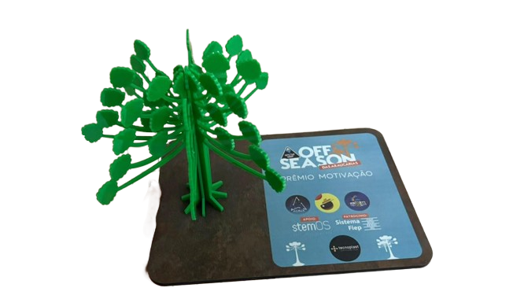
Prêmio Motivação -2025
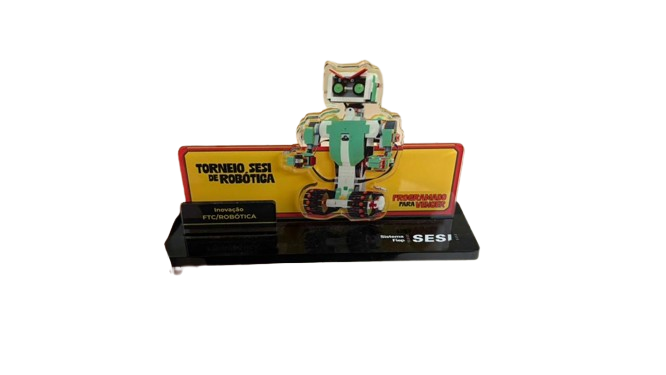
Prêmio Inovação -2025
A FTC (First Tech Challenge) é uma competição internacional da FIRST que desenvolve habilidades em ciência, tecnologia, engenharia, artes e matemática por meio da robótica, incentivando também liderança, inovação e cooperação. Por meio da mentoria da Manna Doctors Machines, a Manna Roosters compartilha experiências e conhecimentos para fortalecer o crescimento da FTC com confiança, identidade e espírito colaborativo.
FLL Explore
A FIRST LEGO League Explore é uma categoria da FIRST voltada para crianças, incentivando a curiosidade, a criatividade e o trabalho em equipe por meio de desafios com LEGO. Na mentoria, a Manna Roosters acompanha os estudantes desde as primeiras ideias até a construção dos modelos, ajudando cada equipe a transformar imaginação em projeto.
De 2021 a 2025, essa trajetória cresceu junto com os participantes: novas temporadas, novas descobertas e muitas formas de aprender robótica de um jeito colaborativo, leve e cheio de propósito.
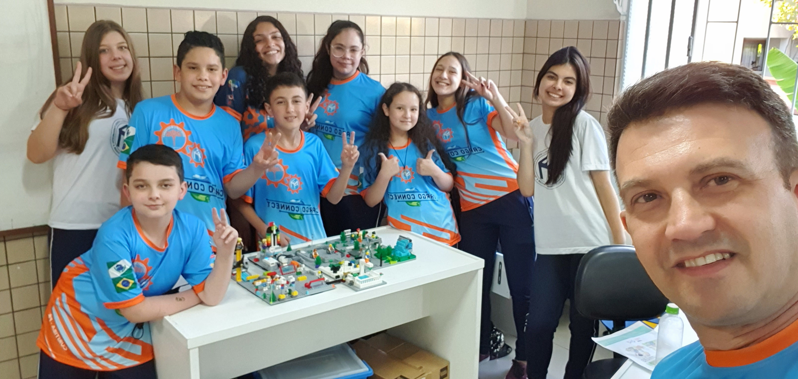
2021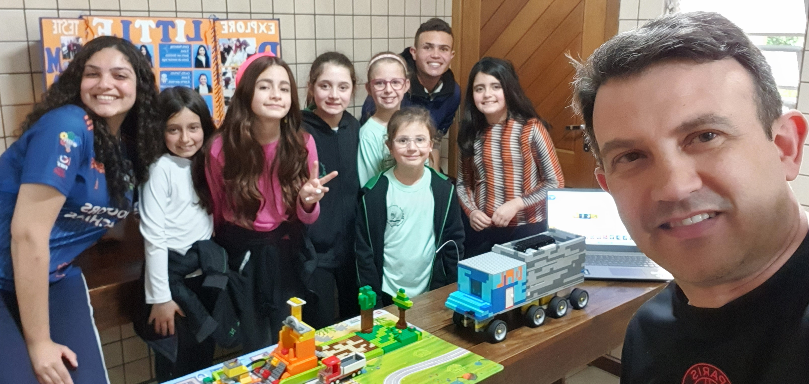
2022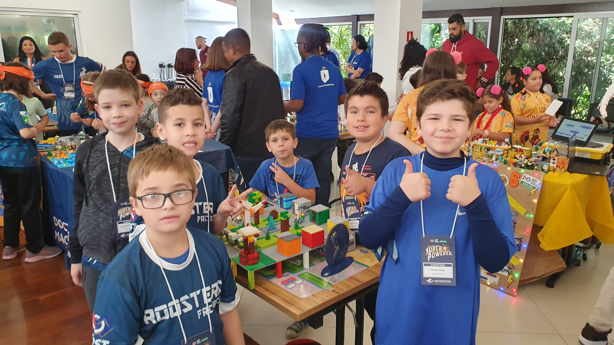
2023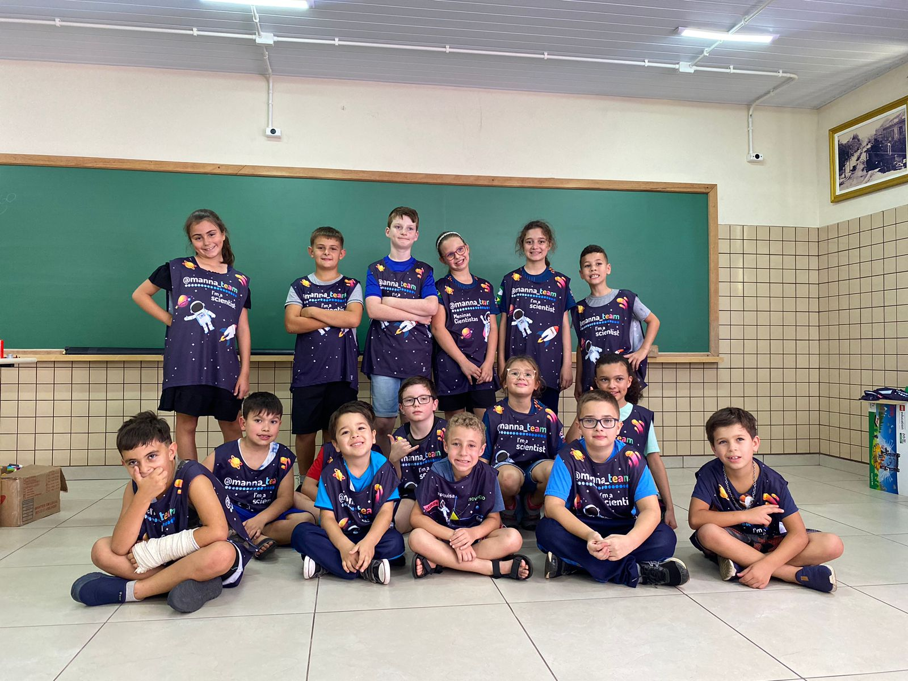
2024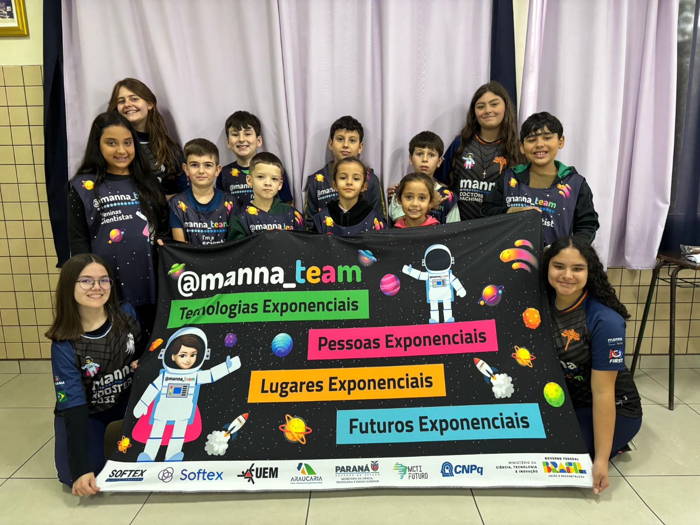
2025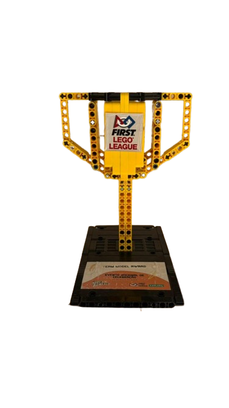
Team Model - Super Powerd
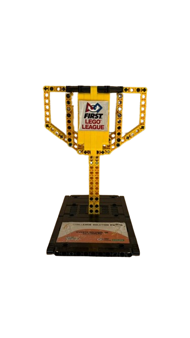
Challenge Solution - Super Powerd
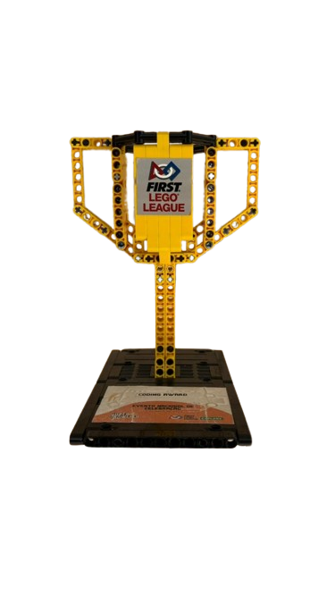
Coding - Super Powerd
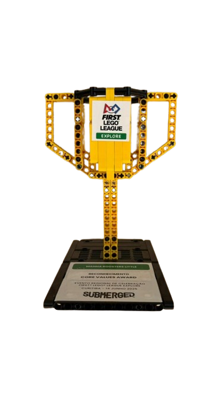
Core Values - Submerged
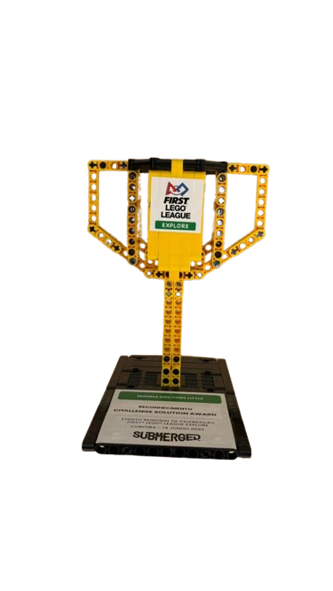
Challenge Solution - Submerged
FLL Challenge
A FLL Challenge, representada pela Manna Doctors Machines, existe antes mesmo da criação da Manna Roosters, reunindo equipes, temporadas e aprendizados que ajudaram a construir a nossa história dentro da robótica. Ao longo dessa trajetória, a equipe conquistou várias classificações para competições nacionais e chegou uma vez à etapa internacional, levando o nome do time para além do Brasil.
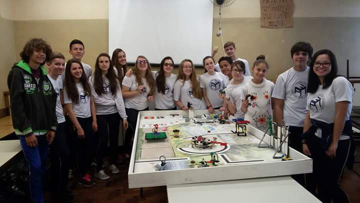
2016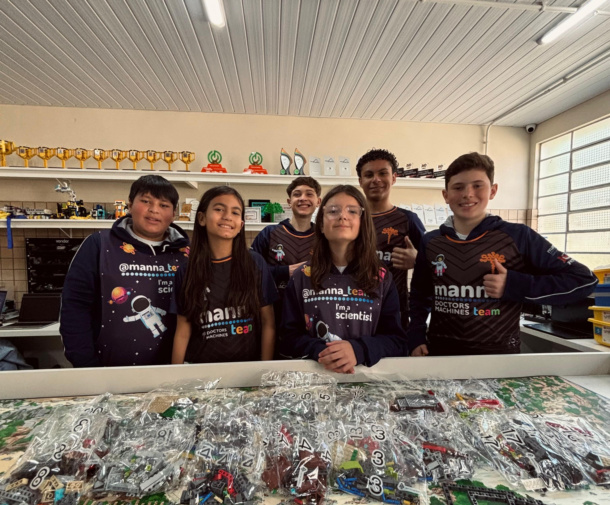
2025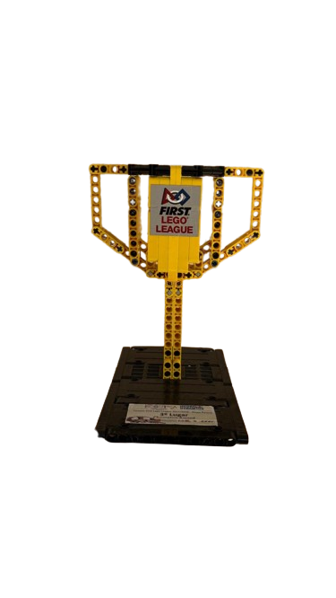
Champion Awards - Hydro Dynamics
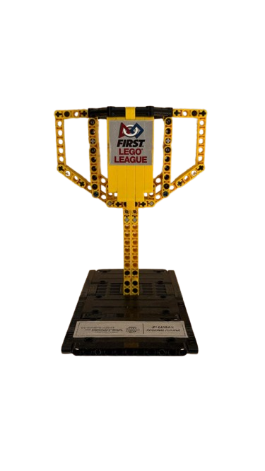
Champion Awards - Cargo Connect
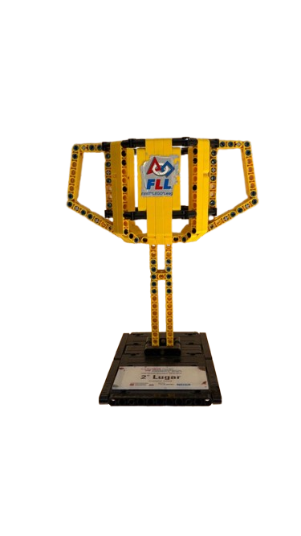
Champion Awards - Into Orbit
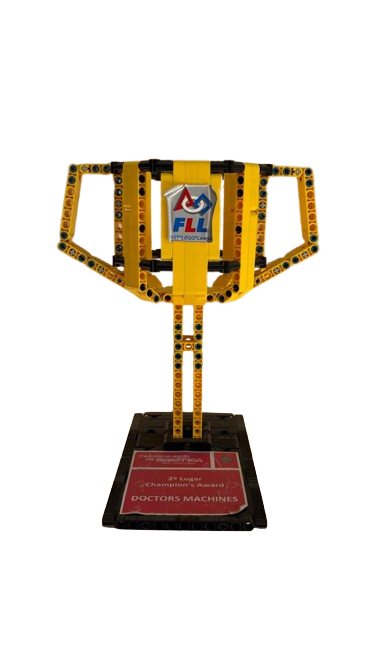
Champion Awards - Replay
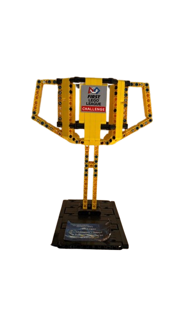
Champion Awards - Submerged
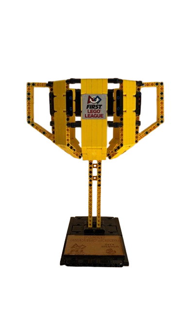
Champion Awards - City Shaper
Esses são apenas alguns dos prêmios que conquistamos ao longo de todos esses anos de FLL Challenge, uma trajetória marcada por muito aprendizado, dedicação e conquistas.
OBR
A OBR (Olimpíada Brasileira de Robótica) é uma competição nacional que aproxima estudantes da robótica por meio de desafios práticos, programação, construção de robôs e trabalho em equipe. Cada teste exige leitura de pista, tomada de decisão, ajustes finos e muita colaboração.
Na mentoria da Manna Roosters, as equipes recebem apoio para transformar ideias em robôs competitivos: planejamento, montagem, testes, correção de erros e preparação emocional para competir. Com essa trajetória, já passamos para duas etapas nacionais e conquistamos diversos prêmios, mostrando a evolução das equipes mentoreadas ao longo dos anos.
 2023
2023
 2024
2024
 2025
2025


No Nível 1, a mentoria acompanha os primeiros passos dos estudantes na OBR, ajudando na montagem, programação, testes de percurso e organização da equipe. O robô é desenvolvido com foco em aprender a resolver problemas de forma prática, ajustando sensores, movimentos e estratégias conforme os desafios aparecem.


No Nível 2, os estudantes aprofundam a parte técnica, trabalhando com decisões mais precisas de programação, construção e estratégia. A Manna Roosters auxilia no aperfeiçoamento dos robôs, na análise dos erros e na preparação para etapas mais competitivas, fortalecendo autonomia, responsabilidade e trabalho em equipe.
Modalidades do Arduino
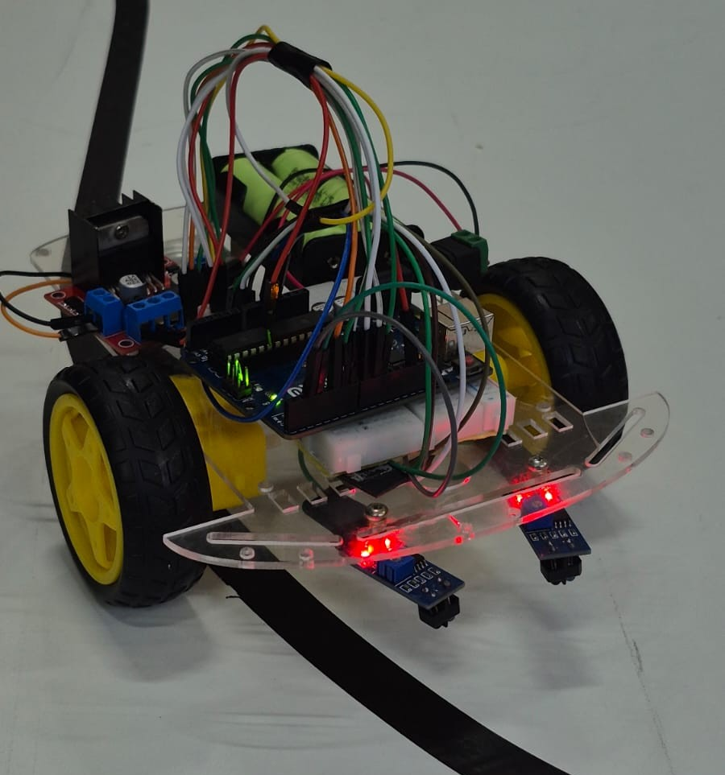
O Segue Linha é uma modalidade em que o robô precisa acompanhar uma faixa no chão de forma autônoma, usando sensores para identificar o caminho e programação para decidir como reagir a curvas, mudanças de direção e pontos críticos da pista.
A equipe trabalha desde a construção do robô até os testes finais: calibragem dos sensores, ajuste de velocidade, organização dos fios e lógica de programação. O objetivo é fazer o robô evoluir teste após teste, com precisão e estratégia. A equipe de robôs segue linha também está sendo preparada para competir no evento da SEED (Secretaria de Estado da Educação do Paraná), que estará participando do Salão de Robótica 2026.

O Robô Sumô é uma modalidade em que dois robôs disputam dentro de uma arena, buscando empurrar o adversário para fora da área de combate. Para isso, o projeto precisa unir força, estabilidade, sensores bem ajustados e uma programação capaz de reagir rapidamente aos movimentos do oponente.
Nessa modalidade, os estudantes desenvolvem estratégia, leitura de sensores, distribuição de peso, tração e controle dos motores. A equipe também está se preparando para apresentar esse trabalho no Salão de Robótica 2026, fortalecendo a participação nas modalidades com Arduino.

O Cabo de Guerra é uma modalidade em que dois robôs se enfrentam em uma disputa de força, controle e resistência. Cada equipe precisa construir uma estrutura firme, com boa tração e programação eficiente para puxar o adversário ou manter vantagem durante o desafio.
Nessa modalidade, os estudantes trabalham mecânica, potência dos motores, aderência das rodas e estratégia de controle. A equipe também está se preparando para competir no Salão de Robótica 2026.
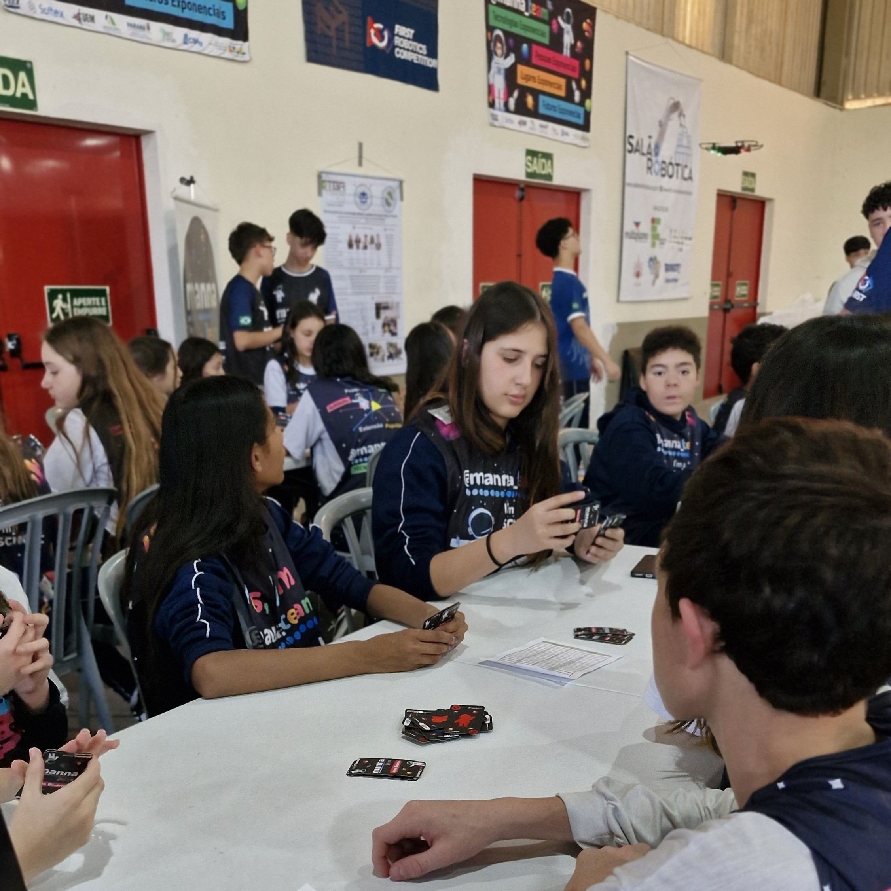
SALÃO DE ROBÓTICA
Em 2024, tivemos o privilégio de sediar o Salão de Robótica, um dos principais eventos de tecnologia do Paraná. Nossas equipes conquistaram o 2º e 3º lugares no Torneio Juvenil de Robótica (TJR), resultado que evidencia a dedicação e a excelência de nossos participantes. Em 2025, consolidamos nossa trajetória de três anos consecutivos de participação em competições de robótica, com destaque para a OBR, Off Season das Araucárias, Segue Linha, Robótica Artística, Robô Sumô e Cabo de Guerra, reforçando nosso compromisso com o desenvolvimento de jovens talentos na área de tecnologia e inovação.

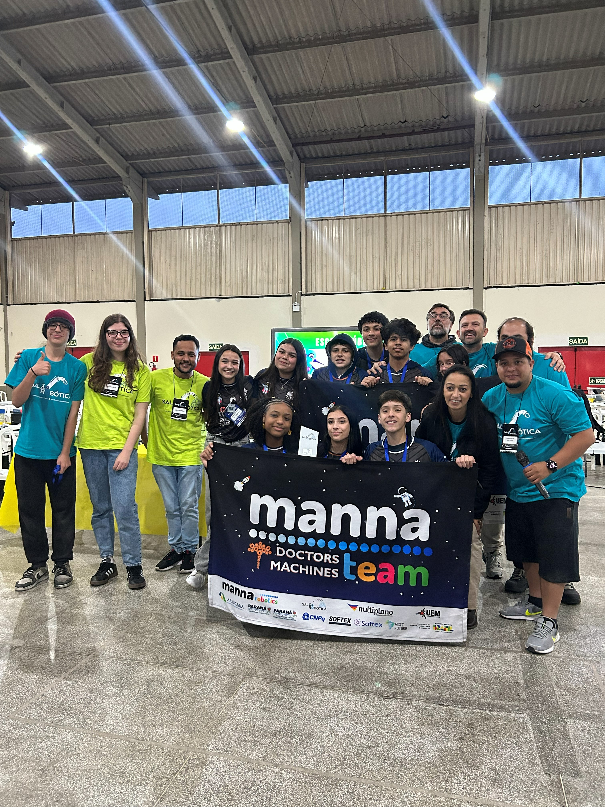